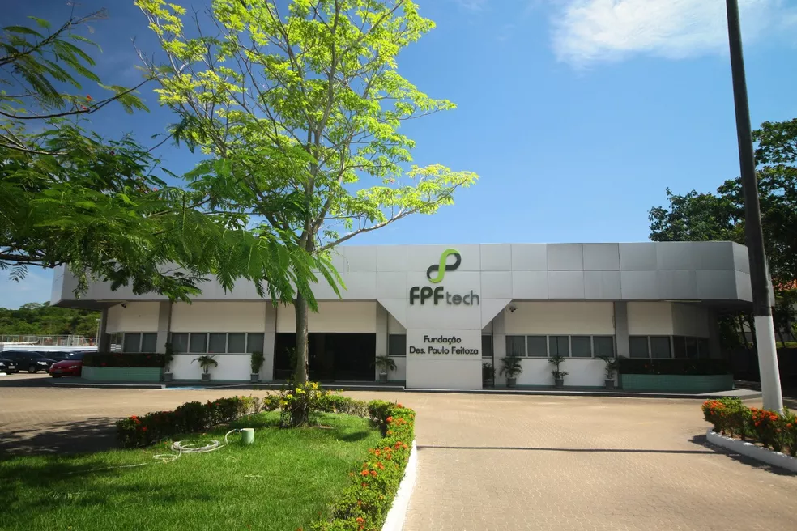

Há oportunidades para Product Owner, Desenvolvedor Mobile, Analista Técnico, Analista de Testes, entre outras vagas.
Entre os benefícios oferecidos pela fundação estão o programa de idiomas e de qualidade de vida.

A Fundação Paulo Feitoza (FPFtech) está oferecendo vagas de emprego para profissionais da área de tecnologia, em Manaus. Também há oportunidades para Boa Vista, capital de Roraima. O número de vagas não foi divulgado.
Há oportunidades para Product Owner, Desenvolvedor Flutter Pleno, Desenvolvedor Python, Analista de Sistemas, Analista de Desenvolvimento Firmware e Hardware, Desenvolvedor Mobile, Analista Técnico e Analista de Testes.
Entre os benefícios oferecidos pela fundação estão o programa de idiomas e de qualidade de vida, plano odontológico, plano de saúde, além do day-off - liberação do trabalho - no dia de aniversário e aulas de yoga.
A Fundação Paulo Feitoza (FPFTech) é uma instituição de Pesquisa e Desenvolvimento sem fins lucrativos. A instituição é focada na geração de soluções inovadoras, serviços e cases de sucesso globais nas áreas de Automação Industrial, Tecnologias Móveis e Assistivas, Internet, Qualidade de Software e Capacitação Tecnológica.
Há 23 anos, a FPFTech atua em Manaus com estreita cooperação com universidades e investe continuamente na formação técnico-científica de seus colaboradores, estudantes e profissionais do mercado.